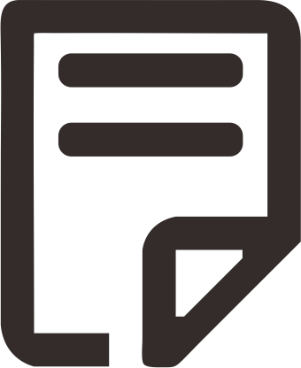

<h2>项目列表</h2>

<div class="aboutme">
	<ul class="recent">
		{% for project in site.projects %}
	    	<li><a href="{{ project.url}}"><h3 class="project-name" itemprop="name">{{ project.name }}</h3></a></li>
	    {% endfor %}
	</ul>
</div>
